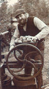
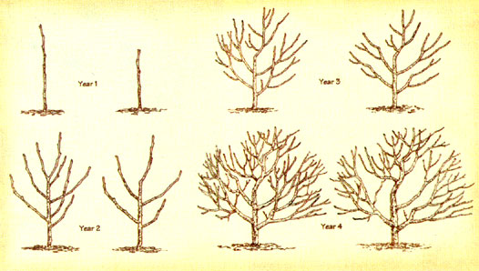

Michael Phillips has written the definitive book on organic apple growing, The Apple Grower. He tends Lost Nation Orchard ( www.herbsandapples.com ) in the White Mountains of New Hampshire with his wife, Nancy, and their daughter, Gracie. In the following piece, Phillips answers the most common questions about backyard apple growing.
-MOTHER
GETTING STARTED
Q: Are homegrown apples really any bet ter than what I get at the supermarket?
MP: Supermarkets typically offer sweet, bland varieties imported from large commercial orchards. No words to describe flavor come to mind when you bite into a supermarket apple. Venture out to a neighborhood orchard during the harvest season and you should find regional favorites and heirloom varieties far more intriguing.
Additionally, how apples are grown has a considerable impact on both the flavor and the nutrient density of the fruit. Trees planted in an herbicide strip braced with soluble chemical fertilizers do not yield the same delightful fare as trees sharing a well-composted soil in a diversified ecosystem.
Now, imagine sitting under that tree, from which you just picked that apple, sighing happily and biting into its juicy, tangy perfection and realizing that you grew this gift of nature your very own self. I don't see it getting any better than that.
Q: What are the top recommended varieties for beginners? Any regional differences?
MP: Recall the greatest tasting locally grown apples you've ever encountered, consult a nursery to be sure the varieties you like will ripen in your climate and then plant the varieties that suit on both counts. Seriously, I think too much emphasis can be placed on the disease resistance of more-recent cultivars, though apples such as 'William's Pride' and 'Gold Rush' certainly are worth that fanfare. A favorite of mine is 'Sweet Sixteen'-delightfully crisp with a pleasing nutty flavor, and yet here's a tree that tends toward an undesirable vertical branch structure (although training in its early years will produce a proper crotch angle). Heirloom apples such as 'Roxbury Russet' and 'Baldwin' may tend towards biennial bearing (every other year) but, oh, are those "on" years worth the wait. Lastly, the shamrock green fruits of Reinette Simirenko' are as tart as a good 'Granny Smith,' but juicier, and with a lovely citrus twist.
Q: How big of a hole do I need to dig for planting a tree?
MP: The size of the tree hole needs to be large enough to accommodate the roots without bending them. A 3-foot diameter hole generally fits the bill. Aim to keep the graft 2 inches above the soil line.
Q: Should I add any amendments to the soil at planting time?
MP: Forget the advice about mixing compost with the soil in the planting hole. I backfill the hole with only its own soil, plus a dusting of 1 pound of rock phosphate to assure early root development. The tree's nutrition in the years ahead will come from above to feed the top 6 inches of soil, where 90 percent of the feeder roots live.
Q: Do I need to prune the trees I just planted?
MP: Whips (single-stem saplings) are headed back at planting time more severely than a feathered tree that already has developed branches. A 1-year-old whip is snipped off about 3 feet above the ground. This helps compensate for lost roots as well as invigorating the lateral buds. When newly planted trees are not cut back severely enough, they often develop laterals well above the desired heading height. On a feathered tree, the central leader should be cut back 6 inches above the highest branch being kept.
Q: What rootstock do you recommend for a backyard planting?
MP : Nondwarfed or "standard" apple trees can grow up to 30 feet high and 30 feet in diameter if not pruned. As a consequence, most people prefer to plant apple trees that have been grafted onto dwarfing rootstock. These trees are easier to prune and pick, but need to be staked because their roots tend to be brittle and grow shallowly. They also should not be planted in wet locations, as they are susceptible to collar rot. All dwarf trees can be kept pruned to a manageable size, though the more vigorous the rootstock, the more pruning you'll have to do. Dwarfing rootstock "EMLA 26" produces a 10-foot to 12-foot tree that is a little tall for easy harvest, but generally begins to bear fruit in three years. "Malling 9" and "Geneva 16" dwarf rootstocks make trees that grow 6 feet to 8 feet tall, so all branches stay within easy reach for pruning, spraying and harvesting.
PRUNING
Q: Pruning daunts me. What should I be thinking about when I go to trim my trees?
MP: I have a pruning mantra that directs my thoughts to the task at hand: "Framework first. Then the thinning. Lastly see the fruit and where it grows." Emphasize good form from the start and you'll avoid having too many polelike limbs crowding each other down the road. An artful pruner sees several years into the future in developing bearing limbs to replace older wood. One old farmer summed up the other tenet of good pruning quite succinctly: "You know you did a good job if you can pick up the family cow afterwards and throw her between the branches." He was describing a big standard tree, but you get the idea. Photosynthesis and good drying breezes ideally will reach all the buds in the interior of a well-pruned tree.
Q: When should I prune?
MP: Dormant season pruning is best done on the tail end of winter. Folks in warmer growing zones can start in January. Up here in northern New Hampshire, we get out the pruning shears in the latter part of March.
Q: What should be done with the branch trimmings after pruning?
MP: Chipping the branches to return them to the soil right beneath the tree is ideal. This assumes you've seen no sign of fire blight (a bacterial disease) in the bark of the branches you've removed. Definitely don't leave a pile of branches along the edge of your yard-black rot can spread back to your fruit trees from the decaying wood.
Q: A friend told me I should buy a mycorrhizal product to boost the growth of my trees. Does such a product have any worth?
MP: Plants have developed an incredible symbiotic relationship with certain fungi to help get nutrients from the soil, as well as to ward off pathogenic organisms. An apple tree has specific mycorrhizae that interact with its roots in the humus layer in these ways. You can inoculate your soil by finding a healthy wild tree and then bringing a few scoops of the soil beneath its branches back to your ground. Ecosystems adapt to the needs at hand without our necessarily having to buy a packaged product.
Q: Why is thinning the fruitlets early so important?
MP: The cells that will become next year's fruit buds are beginning to form when you can see this year's fruitlets, which are baby apples just starting to form. Properly thinning a tree within the first 30 days after petal fall allows the tree to carry a good fruit crop in the current year and still have enough nutrients to develop next year's crop. Many wild apples tend towards biennial bearing simply because this balance isn't achieved without human intervention. Thinning by hand to leave a single apple every 6 to 8 inches along the branch will double the percentage of large fruit.
PEST CONTROL
Q: What are these crusty scars on my apples?
MP: Apple scab. This fungal disease starts on green tissue when buds start to unfurl. A spring rain causes spores to be released by the tens of thousands from overwintered scab lesions on leaf litter from the previous season. That is why good sanitation begins with raking up apple leaves in the fall to either compost or bury deep in the woods. More-susceptible cultivars often need a few weekly applications of sulfur during the primary infection period, when fruit buds are just beginning to show pink through the first rain following petal fall.
Q: Do disease-resistant varieties really make it easier to grow fruit?
MP: Yes. Skipping those applications of sulfur for apple scab and cedar apple rust can be a real boon. Still, I grow the varieties I most like regardless of disease resistance, knowing that the few disease control efforts I employ can be combined with the sprays I'm using to balance the insect pest dynamic.
Q: I've been using an all-purpose spray on my trees for years, but I'd like to grow my fruit organically. Where can I get an all-purpose organic spray?
MP: That all-purpose spray from the garden center was developed to sell along with the concept that growers need not understand what's going on in the natural world around them. It's an ecosystem tragedy when folks apply pesticides and fungicides unnecessarily - the case with any "fits all" strategy. A wise apple grower starts by learning which pests and diseases are causes for local concern, and then acts on each condition with targeted understanding. The good news is that once you get attuned to nature in this way, just a handful of well-timed actions will bring you a reasonable harvest.
Q: What can I do about caterpillars that strip the leaves off my trees?
MP: Smash the buggers! I've found that tent caterpillars and army webworms come into orchards in spotlike fashion. Keep an eye out for their web start-ups. Then you can remove the larval colony by hand early on, when the worms are small and haven't yet inflicted a great amount of damage.
Q: Some bug is tunneling into a lot of my fruit when it's just the size of a nickel. What's up?
MP: We deal with two "petal-fall pests" in the eastern half of the United States that easily could be your culprits. Plum curculio larvae get their start in a crescentlike scar the female weevil makes to prevent the growing fruitlet from crushing her egg; European apple sawfly larvae first scratch the surface of a pea-sized fruitlet, and then go on to eat the seeds in another three or four fruitlets.
Q: What's up with the new kaolin clay spray?
MP: Those petal-fall pests identified above can be held effectively in check with a nontoxic white clay covering applied over the entire surface of the tree. The kaolin clay panicles confuse the insect adults and prove incredibly irritating. Just imagine your own eyes, ears and reproductive parts filled with micro-sized dust; you'd opt to find a noncovered tree in which to feed and lay eggs, too! "Surround" is the trade name of the refined kaolin you need to apply this protective barrier. Application begins as the blossoms start to fall and needs to be thorough. It takes two or three initial sprays to build up a thick enough base to repel these insects. Renew the clay weekly for the next month.
Q: Why did my grandparents hang open jugs of vinegar and molasses out in the orchard?
MP: Such homegrown traps usually target adult fruit moths such as the codling moth. Unfortunately, all sons of bugs end up drowning in this brew, some of which might have been beneficial allies. I prefer to control codlings moths with well-timed sprays of Bacillus thuringiensis (Bt), a biological pesticide stomach-specific to caterpillars. Others have had some success wrapping corrugated cardboard around the trunk of the tree, where the larvae crawl to continue their development. Then at the end of the summer, the cardboard is removed and burned.
Q: When do I hang those red sticky ball traps?
MP: Apple maggot flies (AMF) are the culprits drawn to these effective traps. The new generation emerges from the soil beginning in late June, with females seeking fruit in which to lay eggs throughout July and August. The sticky balls mimic the best apple to be found in the orchard. The female alights on the trap and stays put because of a layer of sticky goo called "Tangletrap" covering the red sphere. Some people report good luck using red plastic cups for this same purpose. Two to four traps per tree generally suffice to keep AMF larvae from ruining a good harvest. I set out traps on early maturing varieties by the first of July, then scrape off the dead flies and renew the sticky material when moving the traps to later-maturing varieties in early August.
Q: What should I do with any fruit that drops to the ground?
MP: Quite a few insect pests pupate in the soil beneath the tree. They get into fallen fruit, from which the larvae crawl out and seek winter quarters. Cleaning up drops each week cuts down on next year's pests. We feed such drops to our sheep.
Q: What's with this sooty blackness that covers my fruit at harvest?
MP: The so-called summer diseases show up in late summer after enough wetting hours have occurred. Both sooty blotch and flyspeck can be rubbed off the surface of the fruit. A well-pruned tree is your best defense-drying breezes help delay the onset of these surface diseases.
Q: It seems everywhere that two apples rub up against each other, the skin has been eaten away by a worm. Is there anything I can do to prevent this?
MP: The larvae of many of the summer moths will conceal themselves from the eyes of predators by going between two apples in order to feed. A good job of thinning earlier in the summer prevents this. Well-timed spray applications of Bt can help keep burgeoning moth populations in check.
Q: First, the blossoms on my Gala tree turned brown. Then, the leaves yellowed and shoots curled downward. By the next spring, the tree was completely dead. What went wrong?
MP: Quite a few of the newer (and often sweeter) cultivars are susceptible to a bacterial disease known as fire blight. Dwarfing rootstocks show similar susceptibility. Infected branches must be pruned out early and destroyed if the tree is to be saved.
GENERAL CARE
Q: What organic fertilizers can I use on my apple trees?
MP: Mature trees (those already bearing fruit) generally don't need much nitrogen at all. Good production depends more on adequate sources of potassium and calcium. Rotting hay mulch provides the first, and gypsum is a good source of calcium that won't affect pH. I spread compost in late fall or early spring to build humus and help in the decomposition of disease-carrying leaves.
Q: Why do some growers paint the trunks of young trees white?
MP: The dark trunk of a young fruit tree warms up fast in the winter sunshine. Then, when the sun goes down, the outer bark may freeze too quickly and split on the side last facing the sun. A 50/50 mix of latex paint and water applied in summer prevents this "southwest injury."
Q: How can I protect my trees from deer?
MP: The only permanent protection is a tall fence. Most folks opt for less intrusive measures. A repellent spray can be mixed from eggs, cayenne and fish oil. This mixture needs to be applied monthly through the winter if deer pressure is high. Deer love apple twigs, and a hefty percentage of next season's fruit buds can be lost overnight if you let your guard down.
Q: I've heard chickens take care of orchard pests. Any truth to this?
MP: Scratching chickens can be counted on to get some of those insects that fall to the ground to pupate in the soil. Try spreading some corn meal to direct their attention to the drip line of the tree. Use kaolin clay spray to your advantage here: Spray all but your "chicken tree," so that the curculios go to where the beaks will snap them up.
Q: What's the purpose of those plastic spiral trunk guards?
MP: These protect the succulent bark of a young tree from voles and rabbits. Spiral guards can be wrapped around saplings in fall but then must be removed in spring-the plastic holds in moisture and provides cover for borers in the growing months. Wire mesh hardware cloth can be used instead for year-round protection. Just be sure to expand the mesh each season so it doesn't constrict the trunk.
Q: Operators of a nearby commercial orchard spray herbicide under their trees to keep the ground open. What can I do instead?
M P: Hay mulch works great to suppress grass growth, and as the mulch decays, it provides potassium for the fruit trees. I've also planted the herb comfrey under many of my freestanding trees as a living mulch: The bumblebees love the blossoms, the leaves of the comfrey smother the thick sod and the root interaction favors apple trees.
Q: One of my 5-year-old trees broke off right at the soil line. What caused this?
MP: The round-headed apple tree borer lays eggs in the bark right at the soil line. The grubs, in turn, spend three years eating away at the cambium layer, going down along major roots and back up again on the other side of the trunk. Eventually, they bore their way right up the center of the trunk to emerge as a new egg-laying adult beetle in June, thus continuing the cycle of destruction. The best protection is vigilance-poke a wire into their entrance holes in September and spear the first-year borers. A coating of thick, pottery-grade kaolin clay applied to the trunks each summer seems to deter the female beetle.
Q: What kind of sprayer do you recommend for the backyard grower?
MP: The value of a quality backpack sprayer will show itself immediately. You won't have to set the sprayer tank down to work the pump, and more spray can be carried per tank-up to 5 gallons. Backpack sprayers come with either a piston pump or a diaphragm pump. Both compress air in a pressure chamber that allows irregular pumping action to result in a steady stream. The piston pump can generate a higher pressure than the diaphragm. Greater pressure results in smaller-sized droplets of spray and thus, more coverage. Abrasive materials like ground botanicals and copper powders shorten the working life of a piston but are easier on a diaphragm pump.
Q: How do I best store apples through to spring?
MP : Apples keep best if stored at or near 32 degrees with a relative humidity approaching 90 percent. Our unheated farmhouse cellar works great: The drafty stone foundation keeps things cool, and the dirt floor is damp. Mesh wire cages protect six bushels of apples at a time from nibbling mice. Garages, covered porches and woodsheds do in a pinch for late fall storage; just cover the fruit with old blankets on particularly crisp nights. When the deep cold settles upon the land, you'll need to protect your winter keepers from freezing. Sort through them one last time. Put the best in perforated bags in the fridge, and turn all the rest into that apple butter you never quite got around to making over the holidays.
Michael Phillips is the author of The Apple Grower , published by Chelsea Green Publishing and available on MOTHERS Bookshelf, Page 127.
Mother Earth News
|
 Michael Philips of Lost Nation Orchard in Groveton, New Hampshire, makes cider from organic apples. |
 Training trees in the early years of an orchard makes for strong scaffold branches capable of bearing a full crop. Head back a lanky leader on vigorous stock, but leave dwarf trees alone to encourage early bearing. |
|